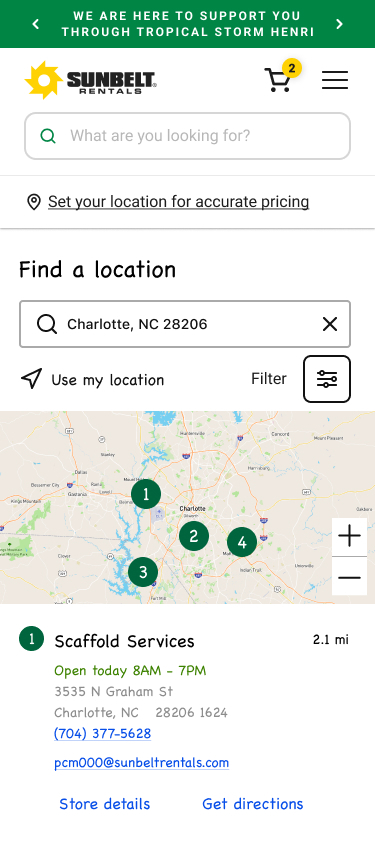

Sunbelt Rentals: Find a Location
Introduction
Role
-
Lead Product Designer
Tools
-
FigJam
-
Usability Hub
-
Figma
-
Google Analytics
-
Design System
Deliverables
-
Competitive Analysis
-
User Stories
-
User Flows
-
Final Designs
-
Prototype
-
Annotations
-
Usability Testing Results
Duration
-
3 Sprints
The Problem
SUNBELT RENTALS
Although Sunbelt Rentals is seeing a large growth in the equipment rental industry, much of the business is still done over the phone, from ordering to managing their equipment rentals. Our goal is to increase online engagement and help customers enter into the shopping experience from the location page. We needed to consider SEO on the store details pages to help drive traffic and allow for store personalization such as promotions or equipment offerings.
THE USERS
Users needed to find a store nearby that offered the equipment they needed, quickly determine the store hours for the day, and enter into the online shopping experience once their store was identified.
The Solution
The locations page of sunbeltrentals.com was designed to always find at least one location near the user and allow them to filter by equipment offered and the miles away. The user can interact with the map or list to see the details that are most important to them like today’s hours, the address, the store name, ability to get directions, see details, and call the store. On the store detail page, the user is never left at a dead end through the use of an ‘other stores’ component. The user can select from an equipment category and enter into the shopping experience, knowing that their store has the items they need. The addition of text and marketing components allows for SEO and store personalization.
Discovery
COMPARATOR AND COMPETITOR ANALYSIS
- My team researched comparators and competitors such as Best Buy, CharlesSchwab (identified as best in class by NN Group), REI, Target, Starbucks, United Rentals, and Ikea. We used a FigJam board to pull in screen shots and identify patterns.
- Find a location by city, state, zip/postal code, and ‘current location’.
- Map/list view and interaction as the user selects from either the map or the list.
- Information and actions commonly found on the store listing page: store name, miles away, hours, address, phone number CTA, view store details CTA, get directions CTA, ‘Make this your store’ CTA, and filter by services.
- Information and actions commonly found on the store details page: all hours for the week including holiday, get directions CTA, phone number CTA, map view of the store, other stores nearby, ‘Make this your store’ CTA, marketing content, reviews, store description, store services or products.
USER SURVEY

- It was a surprise that many users were finding a location before placing an order online. We knew we needed an easy way for them to enter into the shopping experience.
- ‘Get directions’ needed to be prominent and available on both the store details and store listing page.
- Users wanted the ability to ‘Set as my store’ so we accounted for this in our designs knowing that this would be a post launch improvment.
- The type of equipment offered at the store was very important for the user, so we incorporated this into the filter options as well as on the store details page.
- Other information such as the miles away, store hours, and address were given hierarchy on the store listing page as well as on the store details page.
GOOGLE ANALYTICS

- Originally, the product team proposed removing the ‘email’ option and from our competitor/comparator research, we didn’t see it as a necessary CTA. From the analytics, we could see that almost as many users were selecting the email as they were the ‘get directions’ CTA on the current website. We presented these findings and decided to add it back in.
- Many users were actually landing on the detail page directly instead of the locations landing page which indicated our need for SEO text components and store personaliztion.
- Just as many users were selecting the phone number and get directions CTA from the landing page as they were from the details page, so these actions needed to be carried through the experience.
Information Architecture
USER FLOWS
Next, we put together user flows to address the user stories listed above and account for various use cases of the locations page.

WIREFRAMES
I started with sketching out my wireframes, including all the features determined in research and aligned with the product team.
Find a Location
Far Away Conditional Text
Filters
Find a Location
Far Away Conditional Text
Filters
Store Details
Store Details
Store Details: Set Store
- Search by city, state, zip, or ‘use my location’.
- Filter by equipment and tools and miles away. Deprioritized 'services' with the product team.
- Hierarchy to information like today’s store hours, miles away, address with CTA for directions, phone number CTA, email, and store details CTA.
- Conditional messaging about delivery when the results are far away.
- Incorporated product offerings, links to the equipment and tools categories, other nearby locations and all store hours.
- Accounted for the ‘Set as my store’ CTA for a post launch improvement.
USABILITY TESTING
After receiving feedback from the design team and stakeholders, I was ready to put the prototype through usability testing. We utilized usability hub for the testing and received feedback quickly.

Users were able to find a specific type of location by utilizing the filters, get directions, view all store hours, and gave us insights into additional features for post launch like store reviews.
Visual Design
After redesigning the entire website, we had created several components that we could reuse in these designs such as a product carousel, store list from the checkout flow, filtering from the product listing page, and marketing components for store personalization. In some scenarios we created new components and identified interactions like a sticky map on scroll for mobile. This allowed users to see and interact with the map while scrolling through the list of stores.
Location Landing Page
Location Filters
Location Detail Page
Find a Location
Scrolled View
Location Detail Page
- Interactions were defined and annotated such as the list scrolling up when selecting from the map and the pin shifting to the center of the map in a selected state.
- Working with product and engineering, we outlined the detailed requirements. We determined the search radius and how we would zoom out to always show a result and set a max radius for zooming out when in scenarios with several choices.
- I created a variations to account for stores with a large product offering and a small product offering by utilizing a ‘show more’ button on the list of equipment and tools.
- We made all designs pixel perfect with prototypes to show selected and scrolled states.
Next Steps
- We’ve identified areas of improvement like ‘Set as my store’ and store reviews. We’d also like to explore what sort of services users are interested in seeing available at a store.
- Once this goes live in a few months, we’ll look at the analytics and identify areas of improvement with the product team.